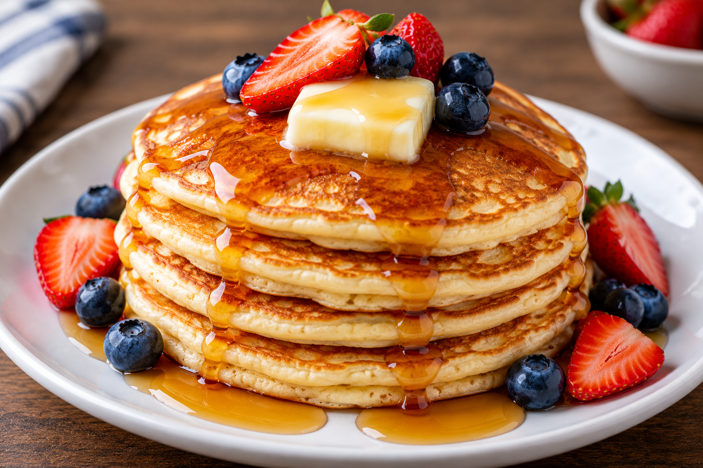

Pancake

For a Great morning
Pancakes are a classic breakfest dish that is soft, fluffy,
and deliciuos.
They are made with simple ingredients like flour, miilk,
and eggs.
Pancakes are usually served with maple syrup,
butter, or fresh fruit.
ingredients
- 1 cup all-purpose flour
- 1 cup milk
- 1 large egg
- 2 tablespoons sugar
- 2 teaspoons baking powder
- 1/4 teaspoon salt
- 2 tablespoons melted butter
- 1 teaspoon vanilla extract
- Maple syrup
- Fresh strawberries and blueberries
Steps
- In a large bowl, mix the flour, sugar, baking powder, and salt.
- In another bowl, whisk together the milk, egg, melted butter, and vanilla extract.
- Pour the wet ingredients into the dry ingredients and mix until smooth.
- Heat a non-stick pan over medium heat.
- Pour about 1/4 cup of batter onto the pan for each pancake.
- Cook until bubbles appear on the surface, then flip the pancake.
- Cook the other side for 1–2 minutes until golden brown.
- Repeat with the remaining batter.
- Serve the pancakes with maple syrup, strawberries, and blueberries.